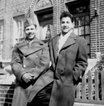
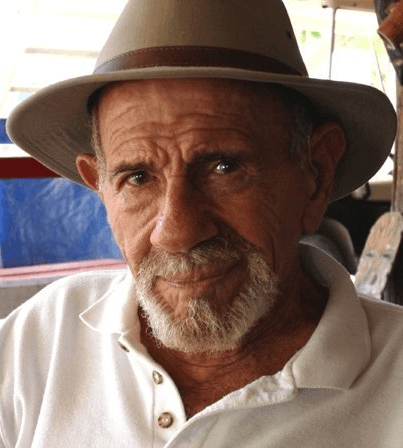

Mr. Luthra is an author and artist who writes about news, fitness, culture, and anything else that meets his interests. If you like his style, visit The Straightforward Voice, where you can find more FREE content.


Praise and glory is given to the advances in technology with many academics worshiping the field as though it were a god in itself. There is however, the flip side of the potential dangers of it. As we’ve seen in America with the forced switch to digital-based technology, privacy, security, and personal freedom have suffered. Technology is a wonderful thing, but has it really enhanced human life or created consumer addiction?
Prophecies of science fiction like lifestyles are inscribed for the future, and while it may seem far-fetched, several are currently being executed.
Smart Cities
A new term used to describe urban develop projects featuring automotive technology to improve the standard of living. And the race is on as countries like Singapore, Dubai, and more all want in on it.
CITE Project (Center for Innovation, Testing and Evaluation) is a billion dollar city in New Mexico to conduct research, although it’s unclear what that entails.
“The vision is an environment where new products, services and technologies can be demonstrated and tested without disrupting everyday life,” said Pegasus Managing Director Robert Brumley. Similarly, another $40 billion dollar city is being built in Astana, Kazakhstan.
Korea has their own concept for a mega metropolis
Even Forbes predicts “Smart Cities” a trillion dollar opportunity.
Robots & Automation
Google now is testing its Waymo, a self-driving car. Facebook and Intel are heavily invested the AI industry as well. And of course, Japan is making advancements.
Economy
Charge it on credit! Now it gets better as more are getting into cashless providers like Bitcoin. The shift to a monetary free economy has begun.
Amazon recently bought Wholefoods and implemented a shopper tracking technology which over-rides their phones to sell products. What most don’t realize is that most, if not all, of these concepts are copycats. Such “smart city design” technologies were proposed decades ago by a man named, Jacque Fresco. His vision however, was very different to anything most have encountered.
Automated transportation, construction, production of goods, revolving platforms, and self evaluating computer testing of new technology were all proposed by Fresco decades ago on Larry King.
Jacque saw machines as a tool to free people, not to control them. Too many people project the Armageddon scenario that they see in movies, but little evidence exists on machines being able to attack people. Hardly any incidents of that exist in time. Fresco reasoned the Terminator scenario was all Hollywood brainwashing, and his plan was to use technology to free people.
Technology cannot be stopped according to Fresco, so it is wise to use it intelligently. However, many companies have stolen his patents over the years for personal gain and profit.
The Problem With The Current Structure
Politicians will never be able to fix our problems, argued Fresco. The present day economic structure is obsolete. He claimed that soon the entire global economy will collapse all over the world.
Fresco’s hope was for people to then consider other alternatives rather than going along with the same politicians whom he referred to as “cerebral insufficients”.
Over the past couple of decades, Jacque worked to build what he called, The Venus Project, a proposed new design of the world’s social and economic structure.
Fresco reasoned that most of all the world’s problems can be solved through intelligent use of the earth’s resources to give people the basic necessities of life – clean air, clean water, a spacious home, healthy nutritious food, access to resources and technology, and a relevant education. Many associated it with communism/socialism, but Fresco reasoned it had nothing to do with it as his designs has no need for politicians.
According to Fresco, military generals don’t know how bridge the differences between nations. War, he says, is the most inappropriate way to solve problems, and he reasons that it creates hatred for generations. As a matter of fact, when it comes to solving the world’s social, agricultural, environmental, and energy problems, politicians haven’t got a clue!
Jacque gave lectures at various universities and sought funding to build the first city. He gave tours of his research center in Venus, Florida, and spoke all over the world on how his designs could help their economy. He felt a healthy educated society is more economical than the present system which suppresses them and believed his design was the current best plan that he was aware of to address the issues in our world today.

Living through the Depression, Jacque saw homelessness and violence due to failed politics. When he was in his twenties, he thought up ways of how society could be better structured. Soon after, he began to test his theories.
Believing most social problems could be corrected by bridging the differences between people, Fresco joined chapters of the Ku Klux Klan and the Black Panther Group, and dissolved them both in about two months by using his knowledge of human behavior. By presenting films of different colored people from different parts counter to what they believed, he was able to dissipate their hatred.
When drafted into the military, Fresco designed various safety units for helicopters and other aircraft. He worked as an industrial designer and inventor, and consulted for various companies in the film, medical, and agriculture industries. Later, Jacque took various jobs while funding his research project to make it what it is today.
He was co-creator of Revel Plastics with Lou Glaser in 1941, created a prefabricated aluminum company, and designed electronic devices for the Parkinson’s Institute of Miami.
To Fresco, The Venus Project, formerly Socio-cyberneering, was a quantum jump in time, light-years ahead of the present social structure to create a peaceful society without war, politicians, or money. However, this wasn’t without pain.

They say the worst pain someone can have is losing their kids. Well, Jacque lost both his son and daughter due to a car accident and cancer. Even veterans who describe their time being tortured in Vietnam and other horrible scenarios with a stern face, break down when mentioning their deceased kids. Despite great loss, Jacque moved on continuing his work. It was all he had left.
A Life of Dharma
Although he didn’t believe in the version of God society labeled as acceptable, he lived a life dedicated to helping others unselfishly. Creating a world where everybody has food, water, and shelter was his goal. He mentioned it was the will of Jesus to create such a free world, as in the bible Jesus said, “Thy will be done on EARTH, as it is in heaven.”
In heaven there are no wars, no businessmen, no politicians, no money, and no prisons. Doing away with poverty, politics, and war, made the incentive for crime goes away according to him. The remaining issues left would be helping the mentally ill and socially damaged people.
Fresco believed that we already have the technology to create such a world. However, the current management of the world’s resources is being run by stupid politicians. Impressive as it seems, it will need testing at in an actual city, but many are now interested in more holistic city designs.
It would have been interesting to see how he would have handled Black Lives Matter or ISIS. In his earlier days, Jacque met a leader of an Arab group who believed the earth was flat. He rubbed a chip on a balloon and let the static attract it to teach the Arab how Earth’s gravity acts as a magnet.
One thing is for sure – democracy as you know it will be dead. Killing and spy drones are already being used by the military, and technology is already replacing many jobs in the name of greed as the billionaire “elites” will save a buck.
With machines, they can ramp up their production without having to pay a salary, provide medical coverage, or give vacations. It’s perfect for them and with Jacque gone, this gives the greedy corporations more leeway to steal his patented designs and run with it for their own agenda. However, if used wisely, a bright future can be created.
Take a good look at your current cell phone. In a few years or even less, you know it will become obsolete, because technology continues to improve quickly. If you went back just ten years, you remember that the phones you have today costed much more back then, most weren’t even around. Remember the days of the first cell phones? So what happened?
The same thing that happened with the television, computer, and internet. These industries had little to no government regulations and so entrepreneurs were able to expand and innovate.
When production and efficiency goes up, costs go down, meaning your buying power skyrockets. That’s how people are able to buy technology today that once costed millions.
Whether it is medical, genetic research, or engineering, people have learned to accept that technology improves rapidly. Unfortunately, they don’t expect the same for government and the economy. They are still looking to politicians to take care of everything rather than giving new ideas a chance.
Funneled government funds made technology what it is today, but now corrupt greedy billionaires are ruling the world through monopolies and must be stopped as it’s killing entrepreneurship.
Even when Nikola Tesla presented free energy and robots to replace hard labor, he was denied as the American government felt his technology threatened capitalism. Hey, capitalism was a wonderful departure from communism, however, it isn’t immune to corruption.

During the morning of May 18th, 2017, Jacque Fresco died. His last few days were spent with close friends and he worked on his vision for a better future until the very end.
The Venus Project was Jacque’s life work, a plan for using science and technology to create a world free of money, military, politicians, and war. It proposed an alternative to the current social and economic structure presently being exercised in our world, and offered an entirely new approach to solving problems.
Jacque maybe gone, but left us a vision for a better future. Perhaps someday, the world may look back and acknowledge him as one of the greatest minds of the 21st century.
Read More: Is Technology Our Friend or Foe?